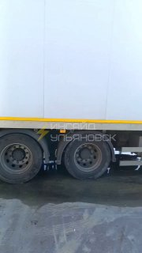
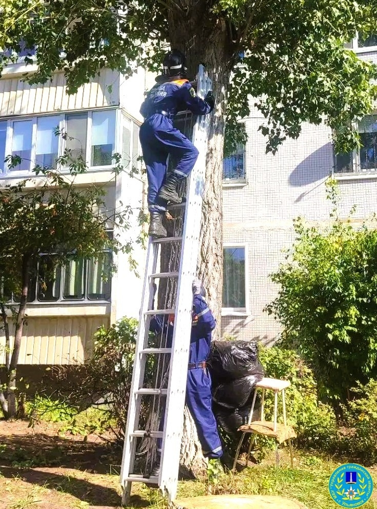
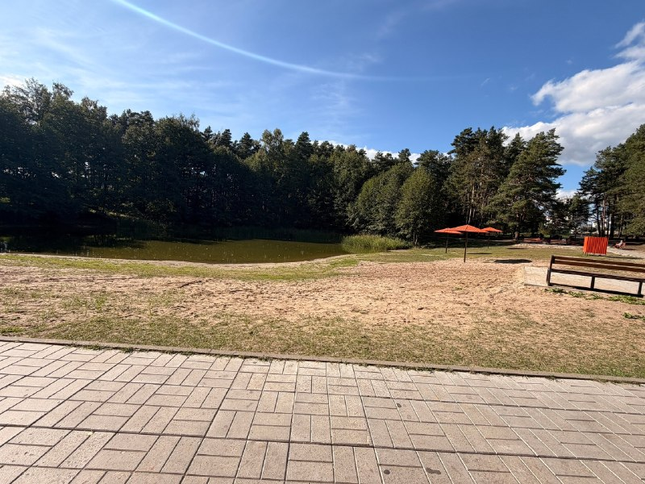
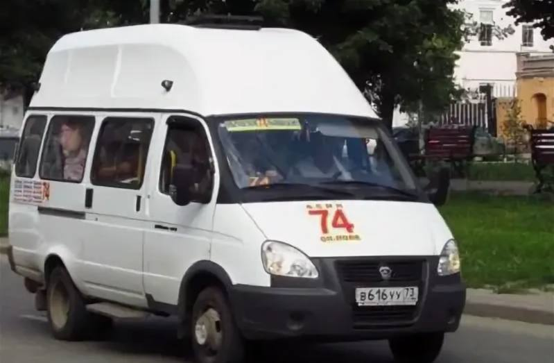
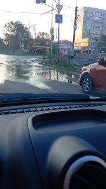

Источник…
НовостьПо данным источника
Это первый шаг к полному запрету вейпов в регионе. В июне 2026 года Госдума разрешила регионам запрещать оборот вейпов с 1 марта 2027 по 1 марта 2032 года. Ульяновская область вошла в число первых регионов, подготовивших правовую базу. Поддерживаете?…


Скоро цена вернётся к обычной. Сегодня — ещё можно успеть.…


Подробности читайте в свежем выпуске авторского проекта ulpravda.ru «Вакансии в муниципальных образованиях Ульяновской области».…


Место пропажи: г. Димитровград, Ульяновская обл. Приметы: рост 170 см, худощавого телосложения, волосы…

Уголовное дело с утвержденным обвинительным заключением направлено на рассмотрение в Центральный окружный военный суд.…


25 сентября, пятница 15:00 — экскурсия по дому-памятнику Гончарову; 16:00 — открытие осеннего сезона в «Квартале»; 18:00 — таперский кинопоказ шедевра Фрица Ланга «Метрополис» в киноклубе «Джармуш» на площадке УлГПУ.…


Каждый желающий мог бесплатно и анонимно узнать свой ВИЧ-статус всего за несколько минут.…

Сейчас власти ведут консультации: по традиции комитеты распределяются в рамках так называемого пакетного соглашения между фракциями.…
22 июня она договорилась с неизвестным в мессенджере, перевела 7700 рублей через «Озон Банк» и забрала закладку в Чердаклинском районе.…


О животном сообщили прохожие. Спасатели развернули трехколенную лестницу и благополучно спустили кота на землю целым и невредимым.…

В каждом: 🪑 удобное кресло из коллекции «Библиотека» 🧶 мягкий плед для прохладных вечеров ☕️ чашка для любимого горячего напитка Как принять участие?…


Животное в течение нескольких дней находилось на дереве на проспекте Ульяновском на высоте около пяти метров.…

Его обвиняют в публичном распространении фейков о ВС РФ и оправдании терроризма в интернете (п. «д» ч. 2 ст. 207.3, ч. 2 ст. 205.2 УК РФ).…

Поправки, которые рассмотрели в Заксобрании, распространят его на улицы, площади, скверы, парки, детские и спортивные площадки, набережные, бульвары и проезды.…

Мужчине инкриминируют публичное распространение заведомо ложной информации о Вооруженных Силах РФ (п. «д» ч. 2 ст.…

Вместо борьбы за выживание руководство ставит более высокие задачи. К ближайшему матчу в Нижнем Новгороде…


Под защитой — конфигурация, планировка, деревянные стены с кирпичной облицовкой, окна, наличники, пилястры, карниз, а также кирпичные столбы въезда и ограждение с калиткой.…

Сотрудники УМВД совместно с военно-следственным комитетом доставили в отдел миграции 26 человек.…

Обследование бесплатное, результат сообщат на месте в течение нескольких минут.…


Соответствующее постановление подписал глава города Александр Болдакин.

Возможности добраться с работы тоже нет — только пешком. В чём причина такого отношения к людям?», — сообщает подписчик.…

Полный электоральный срез по каждому муниципалитету, Полный электоральный срез по каждому району с разбивкой голосов за всех кандидатов, а также анализ, почему сельские районы дисциплинированны, а города — проблемные — в материале 73online.…

В настоящее время в России действует общий принцип привлечения к ответственности с шестнадцати лет.…

Из-за ремонта у нас каждый месяц отключают горячую воду...»

Скоробогатов обвиняется в получении взятки в крупном размере и превышении должностных полномочий по целому ряду эпизодов.…

Ничего по этому фильтру в ленте нет — показать все материалы.
Возник 15.09, пик 15.09 — сюжет держали 34 источника. Полная дуга — в недельнике.